Selvfinansiering er en fundamental strategi for å finansiere bedriftens drift og vekst gjennom egen kapitaltilførsel og tilbakeholdt overskudd. Dette finansieringsverktøyet gir bedrifter større kontroll over sin økonomiske fremtid, reduserer avhengigheten av eksterne långivere og skaper et solid fundament for bærekraftig vekst. For norske bedrifter representerer selvfinansiering ofte den mest kostnadseffektive måten å finansiere utviklingen på, spesielt i lys av SFDR-krav som påvirker tilgang til bærekraftig kapital.
Seksjon 1: Selvfinansieringens Grunnleggende Konsept
Selvfinansiering omfatter alle finansieringskilder som kommer fra bedriftens egen virksomhet og egenkapital. Dette skiller seg fundamentalt fra ekstern finansiering gjennom lån eller nye investorer.
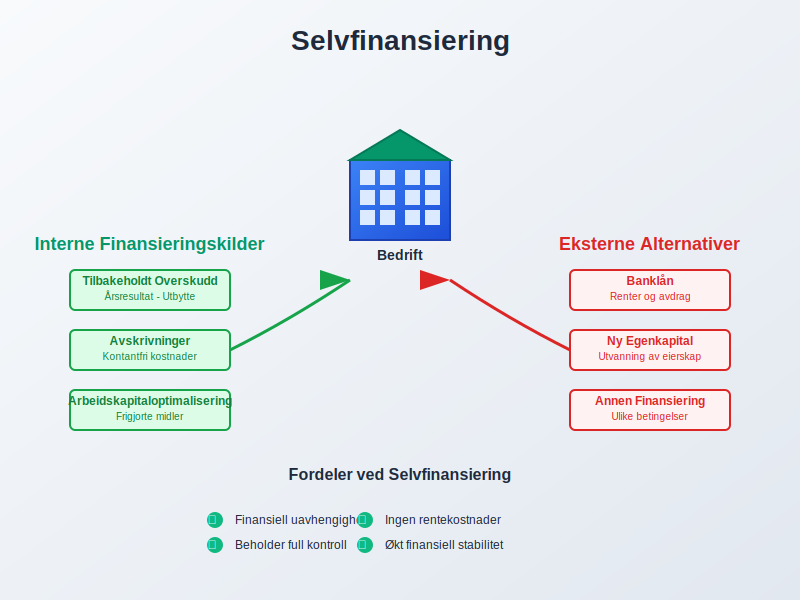
1.1 Definisjon og Kjernekomponenter
Selvfinansiering består av følgende hovedelementer:
- Tilbakeholdt overskudd: Årsresultat som ikke utdeles som utbytte
- Avskrivninger: Regnskapsmessige kostnader som ikke krever kontantutbetaling
- Egenkapitalinnbetaling: Nye innskudd fra eksisterende eiere
- Arbeidskapitaloptimalisering: Frigjøring av bundne midler
1.2 Selvfinansieringens Rolle i Bedriftsøkonomien
Selvfinansiering utgjør kjernen i finansiell selvstendighet og gir bedriften:
| Fordel | Beskrivelse | Regnskapsmessig Effekt |
|---|---|---|
| Finansiell fleksibilitet | Ingen rentekostnader eller avdrag | Reduserte finanskostnader |
| Eierrådighet | Beholder kontroll over strategiske beslutninger | Økt egenkapitalandel |
| Krisemotstand | Mindre sårbar for eksterne finansmarkedsendringer | Forbedret soliditet |
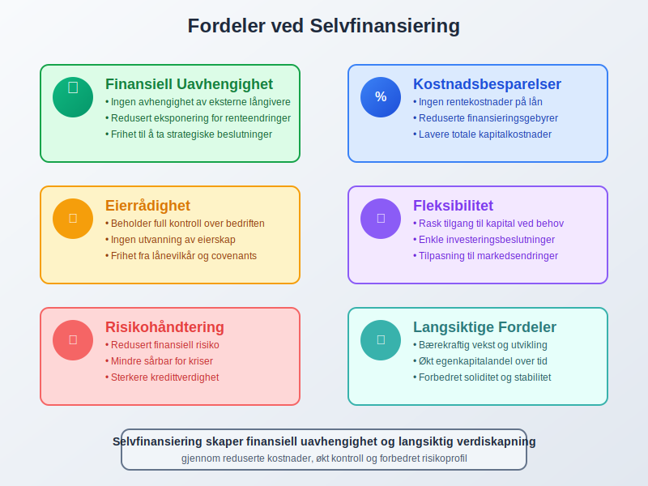
Seksjon 2: Typer Selvfinansiering
2.1 Intern Selvfinansiering
Intern selvfinansiering omfatter midler som genereres gjennom bedriftens daglige drift:
Tilbakeholdt Overskudd
Årsresultatet som ikke utdeles som utbytte til eierne:
- Formål: Finansiere fremtidig vekst og investeringer
- Regnskapsføring: Overføres til opptjent egenkapital
- Beslutningsprosess: Krever vedtak på generalforsamling
Avskrivninger som Finansieringskilde
Avskrivninger frigjør kontanter for reinvestering:
- Prinsipp: Regnskapsmessig kostnad uten kontantstrøm
- Finansieringseffekt: Årlige avskrivninger blir tilgjengelig likviditet
- Reinvesteringskrav: Midlene må brukes til vedlikehold eller nye anleggsmidler
Avsetninger og Reservefond
Systematisk oppsparring til fremtidige behov:
- Vedlikeholdsavsetninger: For planlagt vedlikehold av anleggsmidler
- Ekspansjonsreserver: Målrettet sparing til vekstinvesteringer
- Beredskapsreserver: Sikkerhetsnett for uforutsette hendelser
2.2 Ekstern Selvfinansiering
Ekstern selvfinansiering innebærer tilførsel av egenkapital fra eierne:
Kapitalinnbetaling fra Eksisterende Eiere
* **[Aksjekapitalforhøyelse](/blogs/regnskap/kapitalforhoyelse "Kapitalforhøyelse: Metoder og Regnskapsføring"):** Utstedelse av nye aksjer til eksisterende aksjonærer
- Overkursfondet: Innbetaling utover pålydende verdi
- Betinget kapitalforhøyelse: Fremtidig kapitaltilførsel basert på resultater
Konvertibel Finansiering
- Konvertible lån: Gjeld som kan konverteres til egenkapital
- Ansattes aksjeopsjoner: Fremtidig egenkapitaltilførsel fra ansatte
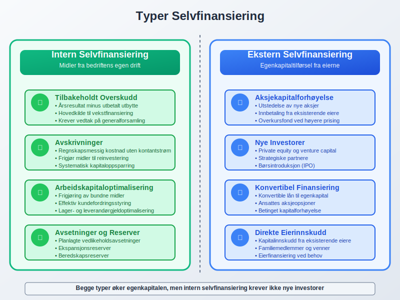
Seksjon 3: Beregning og Måling av Selvfinansiering
3.1 Selvfinansieringsgrad
Selvfinansieringsgraden måler hvor stor andel av investeringene som finansieres internt:
Selvfinansieringsgrad = (Internt finansierte investeringer / Totale investeringer) × 100%
Praktisk Beregningseksempel
For selskapet “InnovCorp AS”:
Årsdata:
- Årsresultat etter skatt: NOK 2.000.000
- Utbetalt utbytte: NOK 500.000
- Avskrivninger: NOK 800.000
- Totale investeringer: NOK 3.500.000
Beregning:
- Tilbakeholdt overskudd: NOK 2.000.000 - NOK 500.000 = NOK 1.500.000
- Intern finansiering: NOK 1.500.000 + NOK 800.000 = NOK 2.300.000
- Selvfinansieringsgrad: (NOK 2.300.000 / NOK 3.500.000) × 100% = 65,7%
3.2 Selvfinansieringsevne
Selvfinansieringsevnen viser bedriftens kapasitet til å generere interne finansieringsmidler:
Selvfinansieringsevne = Årsresultat + Avskrivninger - Utbytte
Nøkkeltall for Selvfinansiering
| Nøkkeltall | Formel | Tolkning |
|---|---|---|
| Cash Flow fra drift | Driftsresultat + Avskrivninger | Operasjonell selvfinansieringsevne |
| Retensionsgrad | (1 - Utbytte/Årsresultat) × 100% | Andel overskudd beholdt i bedriften |
| ROE | Årsresultat / Egenkapital | Avkastning på egenkapital |
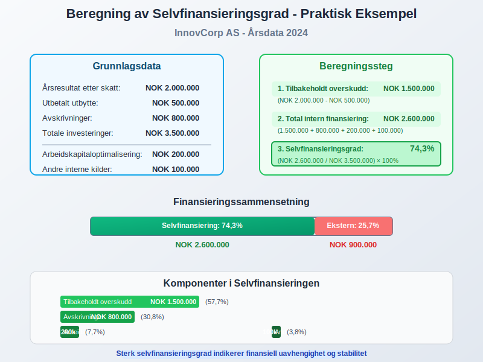
Seksjon 4: Strategisk Planlegging av Selvfinansiering
4.1 Utbyttepolitikk og Selvfinansiering
Utbyttepolitikken er avgjørende for selvfinansieringskapasiteten:
Balansert Utbyttestrategi
- Stabil utbyttepolitikk: Forutsigbart utbytte med gradvis økning
- Variabel utbyttepolitikk: Utbytte basert på årets resultat og investeringsbehov
- Nullutbyttepolitikk: Alle overskudd beholdes for vekst
Regnskapsmessige Konsekvenser
Eksempel: Utbyttebeslutning
Årsresultat: NOK 3.000.000
- Foreslått utbytte: NOK 1.000.000
= Tilbakeholdt overskudd: NOK 2.000.000
Regnskapsføring:
Debet: Foreslått utbytte NOK 1.000.000
Kredit: Utbytteskyld NOK 1.000.000
4.2 Investeringsplanlegging
Systematisk investeringsplanlegging optimaliserer selvfinansieringen:
Kort- og Langsiktig Planlegging
- Ettårsbudsjett: Detaljert planlegging av investeringer og finansieringsbehov
- Femårsplan: Strategisk planlegging av større investeringsprosjekter
- Rullende prognoser: Kontinuerlig oppdatering av finansieringsbehovet
Prioritering av Investeringer
| Investeringstype | Prioritet | Finansieringsmåte |
|---|---|---|
| Vedlikehold eksisterende anleggsmidler | Høy | Avskrivningsmidler |
| Kapasitetsutvidelse | Middels | Tilbakeholdt overskudd |
| Nye forretningsområder | Lav | Kombinert finansiering |
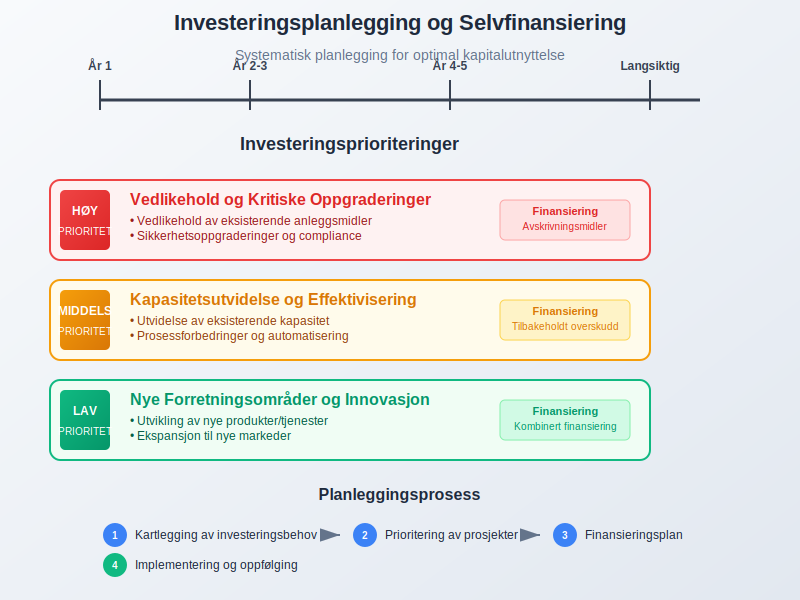
Seksjon 5: Arbeidskapitaloptimalisering som Selvfinansiering
5.1 Frigjøring av Bundne Midler
Arbeidskapitaloptimalisering kan frigjøre betydelige finansieringsmidler:
Kundefordringsstyring
- Effektiv fakturarutiner: Rask utsendelse og oppfølging
- Kredittider: Forkorting av betalingsbetingelser
- Factoring: Salg av kundefordringer for økt likviditet
Lageroptimalisering
- Just-in-time: Redusert lagerbinding
- ABC-analyse: Fokus på høyverdi-artikler
- Sesongplanlegging: Tilpasning til etterspørselsmønster
5.2 Leverandørgjeldsstyring
Strategisk bruk av leverandørgjeld:
- Betalingsbetingelser: Forhandling av lengre kredittider
- Kontantrabatter: Vurdering av kostnader vs. fordeler
- Leverandørfinansiering: Bruk av leverandørenes finansieringstilbud
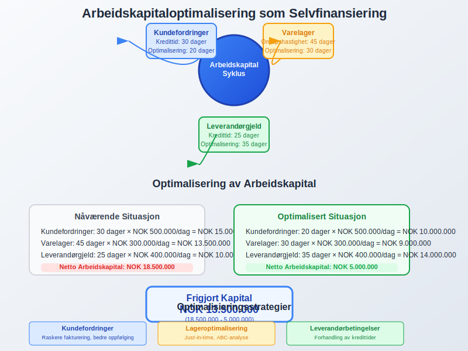
Seksjon 6: Selvfinansiering vs. Ekstern Finansiering
6.1 Sammenligning av Finansieringsalternativer
| Faktor | Selvfinansiering | Lånefinansiering | Egenkapitalinnhenting |
|---|---|---|---|
| Kostnad | Alternativkostnad | Rentekostnader | Utbytte/avkastningskrav |
| Kontroll | Beholder full kontroll | Lånevilkår og covenants | Deling av eierskap |
| Risiko | Lav finansiell risiko | Økt gjeldsgrad | Utvanning av eierskap |
| Fleksibilitet | Høy fleksibilitet | Bindende avtaler | Komplekse prosesser |
6.2 Kostnads-Nytte Analyse
Kapitalkostnad ved Selvfinansiering
- Alternativkostnad: Avkastning eierne kunne oppnådd på alternative investeringer
- Skatteskjold: Ingen fradrag for finansieringskostnader (som ved lån)
- Fleksibilitetspremie: Verdien av finansiell uavhengighet
WACC-påvirkning
Weighted Average Cost of Capital påvirkes av finansieringssammensetningen:
- Økt egenkapitalandel: Kan redusere samlet kapitalkostnad
- Optimal kapitalstruktur: Balanse mellom egenkapital og gjeld
- Bransjespesifikke faktorer: Varierende optimale kapitalstrukturer
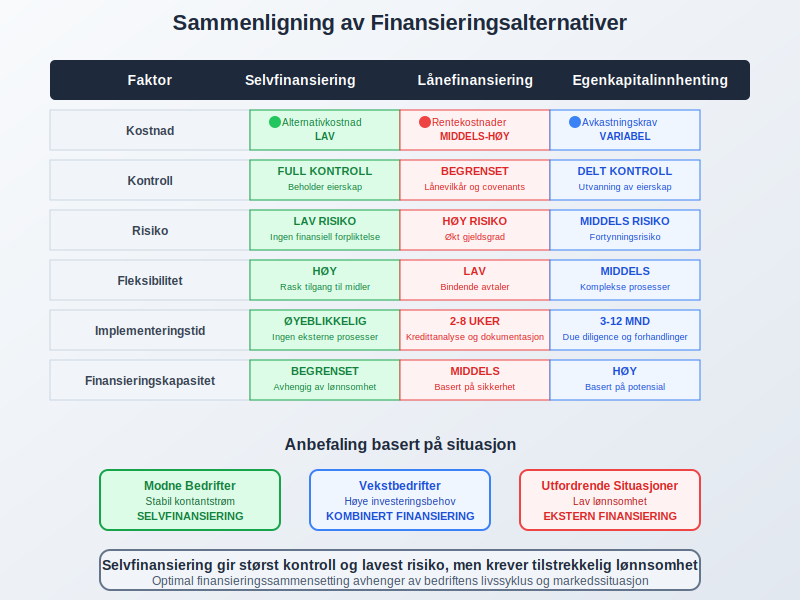
Seksjon 7: Regnskapsmessig Behandling av Selvfinansiering
7.1 Regnskapsføring av Tilbakeholdt Overskudd
Regnskapsmessig behandling av selvfinansiering følger etablerte prinsipper:
Årsavslutningsprosess
Regnskapsføring ved årsavslutning:
1. Resultatdisponering:
Debet: Årsresultat NOK 2.500.000
Kredit: Fri egenkapital NOK 2.500.000
2. Utbyttevedtak:
Debet: Fri egenkapital NOK 800.000
Kredit: Foreslått utbytte NOK 800.000
3. Endelig tilbakeholdt overskudd:
NOK 2.500.000 - NOK 800.000 = NOK 1.700.000
7.2 Balansepresentasjon
Egenkapitaldelen av balansen viser selvfinansieringens effekt:
Egenkapitaloppstilling
- Aksjekapital: Innbetalt kapital fra eierne
- Overkursfond: Kapitalinnbetaling over pålydende
- Annen egenkapital: Tilbakeholdt overskudd og andre reserver
- Årets resultat: Løpende års resultat før disposisjon
7.3 Kontantstrømoppstilling
Kontantstrømoppstillingen viser selvfinansieringens kontanteffekt:
| Kontantstrømkategori | Selvfinansieringselement | Effekt |
|---|---|---|
| Drift | Årsresultat + Avskrivninger | Positiv kontantstrøm |
| Investering | Reinvestering av avskrivningsmidler | Negativ kontantstrøm |
| Finansiering | Utbytteutbetaling | Negativ kontantstrøm |
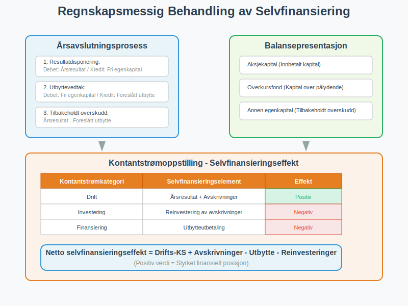
Seksjon 8: Bransjespesifikke Selvfinansieringsstrategier
8.1 Kapitalintensive Bransjer
Produksjonsbedrifter og andre kapitalintensive virksomheter:
Utfordringer
- Høye anleggsinvesteringer
- Lange avskrivningsperioder
- Store vedlikeholdsbehov
Strategier
- Aggressiv avskrivningspolitikk: Raskere frigjøring av midler
- Vedlikeholdsavsetninger: Systematisk oppsparring
- Kapasitetsutnyttelse: Maksimering av inntjening fra eksisterende eiendeler
8.2 Servicebransjer
Kunnskapsintensive bedrifter har andre finansieringsbehov:
Karakteristika
- Lav kapitalintensitet
- Høy personalkostnadsandel
- Immaterielle eiendeler
Selvfinansieringsstrategier
- Høy utbyttepolitikk: Mindre behov for tilbakeholdt kapital
- Menneskelege investeringer: Kompetanseutvikling og rekruttering
- Teknologiinvesteringer: IT-systemer og digitalisering
8.3 Vekstbedrifter
Oppstartsbedrifter og vekstselskaper:
| Vekstfase | Selvfinansieringsfokus | Prioritet |
|---|---|---|
| Oppstart | Minimalt overskudd | Overlevel og vekst |
| Vekst | Reinvestering av alt overskudd | Markedsposisjon |
| Modning | Balansert tilnærming | Bærekraftig lønnsomhet |
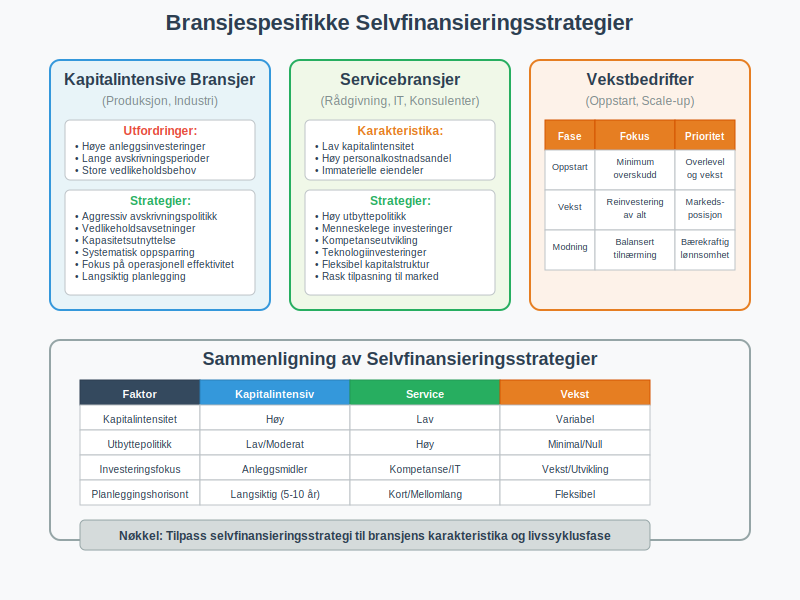
Seksjon 9: Digitale Verktøy og Teknologi
9.1 Moderne ERP-systemer
Enterprise Resource Planning støtter selvfinansieringsplanlegging:
Integrerte Funksjoner
- Budsjett og prognose: Automatiserte prognoser for kontantstrøm
- Investeringsplanlegging: Systematisk planlegging av anleggsinvesteringer
- Rapportering: Sanntidsrapporter på selvfinansieringsgrad
Arbeidskapitaloptimalisering
- Automatiserte fakturarutiner: Raskere kontantinngang
- Lageroptimalisering: AI-baserte prognoser for varelager
- Betalingsoptimalisering: Intelligent timing av leverandørbetalinger
9.2 Business Intelligence og Analytics
Avanserte analyseværktøy gir dybdeinnsikt:
Prediktive Modeller
- Kontantstrømprognoser: Maskinlæring for bedre prognoser
- Scenarioanalyser: Simulering av ulike finansieringsstrategier
- Risikostyring: Identifisering av finansielle risikoer
Dashboard og KPI-er
- Sanntidsmonitoring: Kontinuerlig overvåking av nøkkeltall
- Automatiske varsler: Proaktiv identifisering av avvik
- Benchmarking: Sammenligning med bransjedata
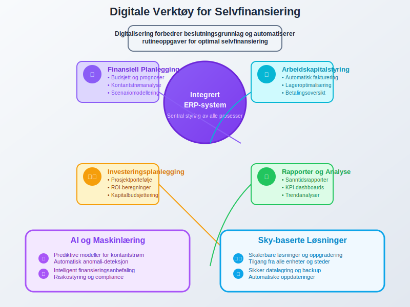
Seksjon 10: Utfordringer og Risikofaktorer
10.1 Vanlige Utfordringer
Lav Lønnsomhet
- Årsaker: Høye driftskostnader, lav prising, ineffektive prosesser
- Konsekvenser: Begrenset selvfinansieringsevne
- Løsninger: Kostnadskutt, prisoptimalisering, prosessforbedringer
Høye Vekstambisjoner
- Utfordring: Selvfinansiering dekker ikke vekstbehovet
- Konsekvenser: Må ty til ekstern finansiering
- Strategi: Balansert vekst tilpasset selvfinansieringsevnen
10.2 Risikofaktorer
| Risiko | Beskrivelse | Risikoreduserende tiltak |
|---|---|---|
| Underinvestering | For konservativ investeringsstrategi | Regelmessig strategisk gjennomgang |
| Likviditetsmangel | Utilstrekkelig kontantbeholdning | Likviditetsstyring og kredittrammer |
| Konkurranseulempe | Langsom vekst sammenlignet med konkurrenter | Hybride finansieringsløsninger |
10.3 Regulatoriske Hensyn
Regnskapsmessige Begrensninger
- Minimumskapitalkrav: Lovpålagte krav til egenkapital
- Utbytterestriksjooner: Begrensninger på utdeling ved lav egenkapital
- Revisjonsplikt: Økte kostander og kompleksitet
Skattehensyn
- Skattlegging av overskudd: Reduserer tilgjengelige midler
- Skatteoptimalisering: Strategier for å maksimere etter-skatt finansiering
- Konsernbidrag: Interne finansieringsløsninger i konsern
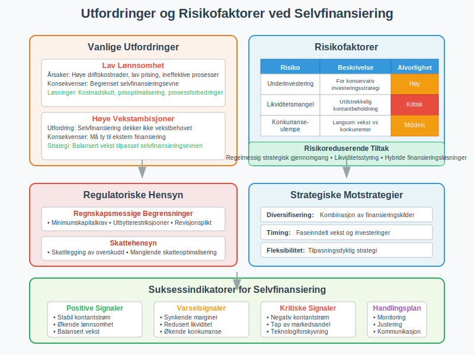
Seksjon 11: Fremtidens Selvfinansiering
11.1 Teknologiske Innovasjoner
Kunstig intelligens og maskinlæring revolusjonerer finansieringsplanlegging:
AI-baserte Prognoser
- Avanserte kontantstrømprognoser: Høyere nøyaktighet i finansieringsplanlegging
- Prediktive analyser: Identifisering av optimale investeringstidspunkter
- Risikostyring: Automatisk identifisering av finansielle risikoer
Blockchain og Smart Contracts
- Transparente transaksjoner: Redusert behov for mellommenn
- Automatiserte betalinger: Forbedret kontantstrømstyring
- Tokenisering: Nye former for egenkapitalfinansiering
11.2 Bærekraftig Finansiering
ESG-fokus påvirker selvfinansieringsstrategier:
Grønne Investeringer
- Miljøvennlige teknologier: Prioritering av bærekraftige anleggsinvesteringer
- Energieffektivisering: Reduserte driftskostnader og økt lønnsomhet
- Sirkulær økonomi: Innovative forretningsmodeller
Sosial Ansvar
- Ansattfokuserte investeringer: Kompetanse og trivsel
- Samfunnsengasjement: Langsiktig verdiskapning
- Stakeholder-kapitalisme: Bred verdi-definisjon
11.3 Regulatoriske Endringer
Fremtidige regnskaps- og skatteregler vil påvirke selvfinansiering:
- IFRS-utvikling: Endrede regnskapsregler for immaterielle eiendeler
- Skatteharmonisering: EU-initiativer for selskapsbeskatning
- Digitalisering: Automatiserte rapporteringsløsninger
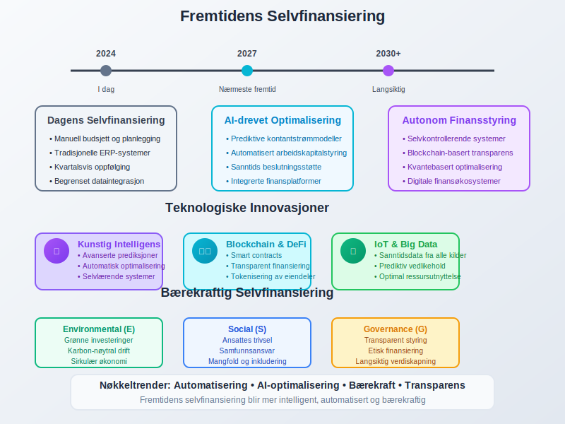
Seksjon 12: Praktiske Implementeringsstrategier
12.1 Strategisk Implementering
Faseinndelt Tilnærming
- Kartleggingsfase: Analyse av nåværende finansieringsstruktur
- Planleggingsfase: Utvikling av selvfinansieringsstrategi
- Implementeringsfase: Systematisk gjennomføring
- Oppfølgingsfase: Kontinuerlig monitoring og justering
Organisatoriske Tiltak
- Tverrfaglige team: Økonomi, drift og strategi
- Kompetanseutvikling: Opplæring i finansieringsplanlegging
- Insentivordninger: Belønning for forbedret selvfinansieringsevne
12.2 Måling og Oppfølging
Nøkkeltall (KPI-er)
| KPI | Målsetning | Rapporteringsfrekvens |
|---|---|---|
| Selvfinansieringsgrad | > 70% | Månedlig |
| Cash conversion cycle | < 45 dager | Månedlig |
| Egenkapitalrentabilitet | > 15% | Kvartalsvis |
Rapporteringsrutiner
- Månedlige rapporter: Operative nøkkeltall og avvik
- Kvartalsvise analyser: Strategisk gjennomgang og justering
- Årlige evalueringer: Helhetlig vurdering av selvfinansieringsstrategi
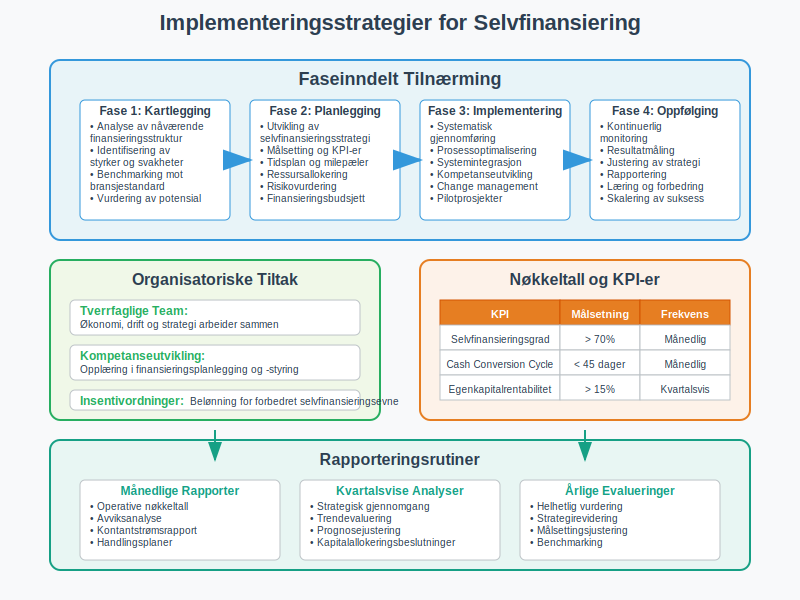
Konklusjon
Selvfinansiering representerer en grunnleggende strategi for å skape finansiell uavhengighet og bærekraftig vekst. Ved å prioritere intern finansiering gjennom tilbakeholdt overskudd, optimalisering av arbeidskapital og strategisk bruk av avskrivninger, kan bedrifter redusere sin avhengighet av ekstern finansiering og beholde full kontroll over sin strategiske utvikling.
Nøkkelinnsikter for suksessfull selvfinansiering:
- Langsiktig perspektiv: Selvfinansiering krever tålmodighet og disiplinert kapitalallokering
- Balansert tilnærming: Optimalisering mellom vekstinvesteringer og utbytteutdelinger
- Kontinuerlig optimalisering: Systematisk forbedring av lønnsomhet og effektivitet
- Teknologiutnyttelse: Bruk av moderne verktøy for planlegging og oppfølging
Strategiske fordeler:
Selvfinansiering gir bedriften fundamentale fordeler som økt finansiell fleksibilitet, redusert risiko og mulighet for raskere strategiske beslutninger. Ved å bygge opp finansiell selvstendighet posisjonerer bedriften seg for å håndtere både utfordringer og muligheter i et dynamisk marked.
Fremtidsrettet implementering:
Moderne selvfinansieringsstrategier må integrere digital teknologi, bærekraftshensyn og endrede regulatoriske krav. Ved å kombinere tradisjonelle finansieringsprinsipper med innovative verktøy og metoder, kan bedrifter skape robuste og fleksible finansieringsløsninger som støtter langsiktig verdiskapning.
Praktisk anvendelse:
For norske bedrifter innebærer effektiv selvfinansiering en systematisk tilnærming til resultatplanlegging, investeringsstrategi og likviditetsstyring. Ved å etablere klare mål, implementere systematiske prosesser og kontinuerlig måle og forbedre selvfinansieringsevnen, kan bedrifter skape et solid fundament for bærekraftig vekst og verdiskapning.
Selvfinansiering er ikke bare en finansieringsstrategi - det er en grunnleggende tilnærming til bedriftsledelse som prioriterer finansiell ansvar, strategisk uavhengighet og langsiktig verdiskapning. I en tid preget av økonomisk usikkerhet og raske markedsendringer, gir sterk selvfinansieringsevne bedriften den fleksibiliteten og stabiliteten som kreves for å lykkes over tid.